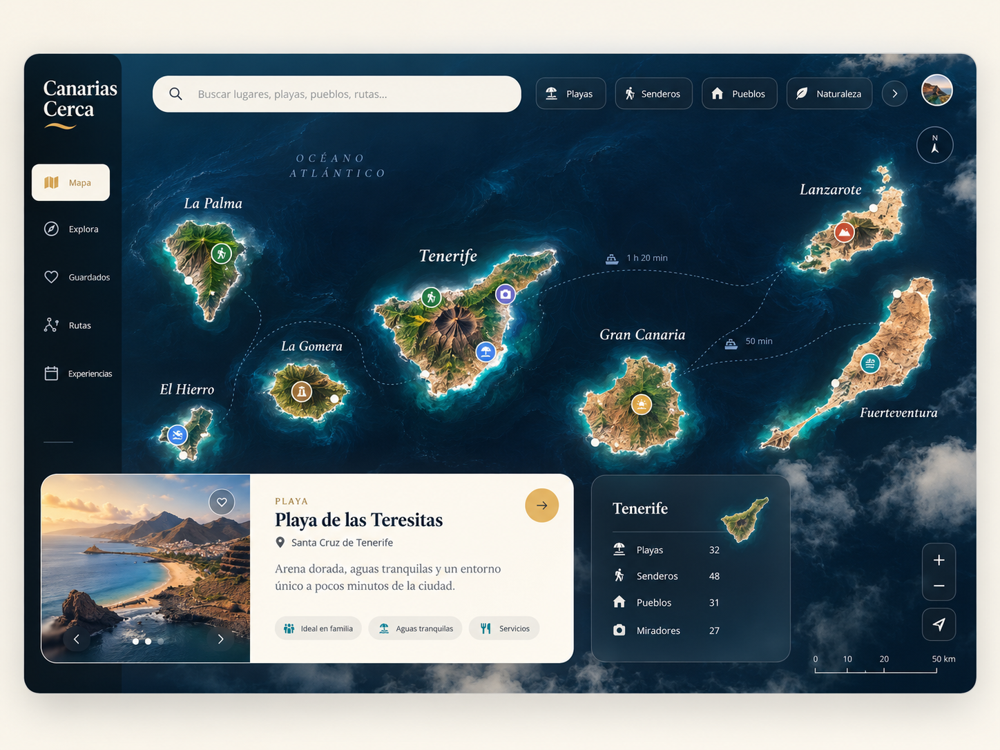
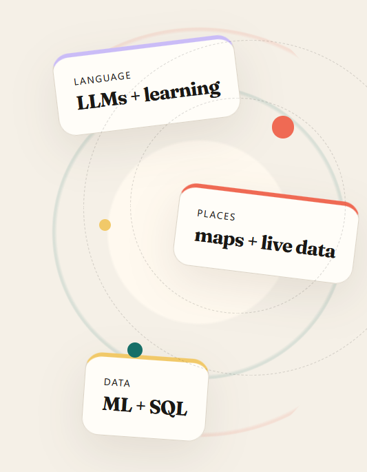
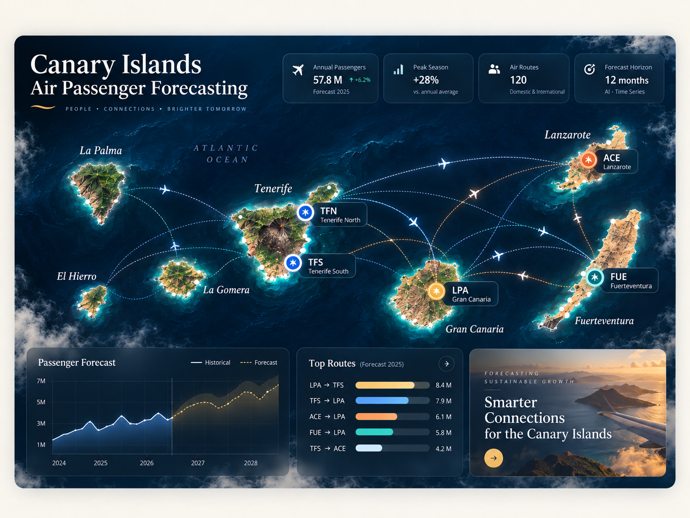
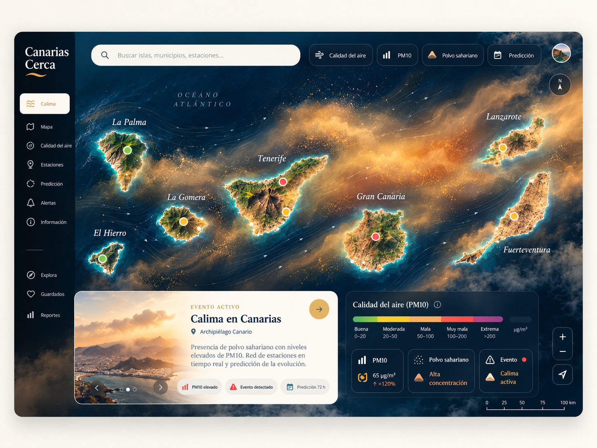

FLAGSHIP · CANARIAS CERCA
Canarias Cerca
A map-first discovery product for the Canary Islands, combining places, local context, transport and live data in one geographic interface.
In active development ↗
I work across machine learning, LLM systems, SQL and backend engineering. My personal work tends to return to two things I genuinely care about: language and places.

My main personal work lives at the intersection of places, language learning and practical automation.
A map-first discovery product for the Canary Islands, combining places, local context, transport and live data in one geographic interface.
In active development ↗
A human-in-the-loop desktop tool that turns source material into reviewable language-learning content before anything reaches Anki.
A separate automation lab for focused dashboards, data utilities and practical workflows. It supports the portfolio without becoming the portfolio itself.
Open site ↗Time series, environmental monitoring and production-grade data work — with emphasis on feature engineering, evaluation and useful outputs.

Forecasting from official passenger data using lag features and seasonality, comparing XGBoost and LSTM models and exposing results through an interactive dashboard.

Environmental monitoring for Saharan dust and air quality using Open-Meteo signals, persistent history and explicit event detection.
Repository ↗Not a separate demo project — the reusable modelling and data skills underneath the products above.
Here the LLM is part of a product workflow: generation, retrieval and evaluation serve a concrete learning or writing task.
A real language-learning product that uses LLMs to generate structured vocabulary and grammar material while preserving human review before save.
A separate learning product for studying from your own materials and practising conversation grounded in what the learner has actually studied.
Multilingual writing workflows for producing and refining useful content with editorial control, consistent tone and reusable prompts.
My professional work started in industrial automation and machine vision and expanded naturally into Python tooling, production data, diagnostics and ML-focused systems.
C++ / OpenCV dual-camera application for positioning and controlling a SCORBOT ER-IX robotic arm.
Data analysis, validation and environmental monitoring work.